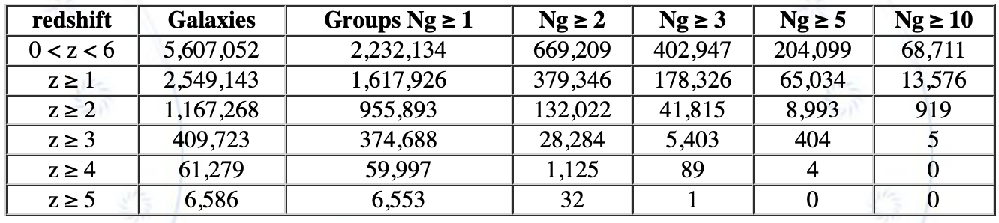

<!DOCTYPE html>
<html lang="en"><head>
  <meta charset="utf-8">
  <meta http-equiv="X-UA-Compatible" content="IE=edge">
  <meta name="viewport" content="width=device-width, initial-scale=1"><!-- Begin Jekyll SEO tag v2.8.0 -->
<title>Qingyang li website | This is my website.</title>
<meta name="generator" content="Jekyll v4.2.2" />
<meta property="og:title" content="Qingyang li's website" />
<meta property="og:locale" content="en_US" />
<meta name="description" content="This is my website." />
<meta property="og:description" content="This is my website." />
<link rel="canonical" href="http://localhost:4000/" />
<meta property="og:url" content="http://localhost:4000/" />
<meta property="og:site_name" content="Qingyang li's website" />
<meta property="og:type" content="website" />
<meta name="twitter:card" content="summary" />
<meta property="twitter:title" content="Qingyang li website" />
<script type="application/ld+json">
{"@context":"https://schema.org","@type":"WebSite","description":"This is my website.","headline":"Qingyang li's website","name":"Qingyang li's website","url":"http://localhost:4000/"}</script>
<!-- End Jekyll SEO tag -->
<link rel="stylesheet" href="/assets/main.css"><link type="application/atom+xml" rel="alternate" href="http://localhost:4000/feed.xml" title="Qingyang li's website" />

  <style>
  /* 设置整个页面的背景颜色或背景图片 */
  body {
    background: url('../images/2.jpeg') center/cover no-repeat fixed; /* 或者使用背景颜色 background-color: #your-color; */
    margin: 0; /* 去除默认的页面边距 */
    padding: 0; /* 去除默认的内边距 */
    overflow-x: hidden; /* 隐藏横向滚动条 */
  }

  /* 创建左侧背景容器 */
  .left-background {
    position: fixed;
    top: 0;
    left: 0;
    width: 50%; /* 左侧宽度，根据需要调整 */
    height: 100%;
    background: inherit; /* 继承页面背景 */
    z-index: -1; /* 将其放在页面底部 */
  }
 /* 创建右侧背景容器 */
 .right-background {
      position: fixed;
      top: 0;
      right: 0;
      width: 50%; /* 右侧宽度，根据需要调整 */
      height: 100%;
      background: inherit; /* 继承页面背景 */
      z-index: -1; /* 将其放在页面底部 */
    }
</head>
<body><header class="site-header" role="banner">

  <div class="wrapper"><a class="site-title" rel="author" href="/"><b>Home</b></a><nav class="site-nav">
        <input type="checkbox" id="nav-trigger" class="nav-trigger" />
        <label for="nav-trigger">
          <span class="menu-icon">
            <svg viewBox="0 0 18 15" width="18px" height="15px">
              <path d="M18,1.484c0,0.82-0.665,1.484-1.484,1.484H1.484C0.665,2.969,0,2.304,0,1.484l0,0C0,0.665,0.665,0,1.484,0 h15.032C17.335,0,18,0.665,18,1.484L18,1.484z M18,7.516C18,8.335,17.335,9,16.516,9H1.484C0.665,9,0,8.335,0,7.516l0,0 c0-0.82,0.665-1.484,1.484-1.484h15.032C17.335,6.031,18,6.696,18,7.516L18,7.516z M18,13.516C18,14.335,17.335,15,16.516,15H1.484 C0.665,15,0,14.335,0,13.516l0,0c0-0.82,0.665-1.483,1.484-1.483h15.032C17.335,12.031,18,12.695,18,13.516L18,13.516z"/>
            </svg>
          </span>
        </label>

        <div class="trigger"><a class="page-link" href="/about/"><font color=#FFFFFF><b>About me</b></font></a><a class="page-link" href="/Publications/"><font color=#FFFFFF><b>Publications</b></font></a><a class="page-link" href="/Products/"><font color=#FFFFFF><b>Products</b></font></a><a class="page-link" href="/CV/"><font color=#FFFFFF><b>CV</b></font></a></div>
      </nav></div>
</header>

<main class="page-content" aria-label="Content">
      <div class="wrapper">
        <div class="home">
          <p><b><font size="4">CLAUDS and HSC-SSP group and protocluster candidate catalogs</font></b></p>

<p>Using the extended halo-based group finder developed by <a href="https://ui.adsabs.harvard.edu/abs/2021ApJ...909..143Y/abstract">Yang et al. 2021</a>, which is able to deal with galaxies via spectroscopic and photometric redshifts simultaneously, we (<a href="https://iopscience.iop.org/article/10.3847/1538-4357/ac6e69">Li et al. 2022</a>) construct galaxy group and candidate protocluster catalogs in a wide redshift range (0 &lt; z &lt; 6) from the joint CFHT Large Area U-band Deep Survey (CLAUDS) and Hyper Suprime-Cam Subaru Strategic Program (HSC-SSP) deep data set. Based on a selection of 5,607,052 galaxies with i-band magnitude m<sub>i</sub> &lt; 26 and a sky coverage of 34.41 deg<sup>2</sup>, we identify a total of 2,232,134 groups, within which 402,947 groups have at least three member galaxies. By checking the galaxy number distributions within a 5-7 h<sup>-1</sup>Mpc  projected separation and a redshift difference &Delta;z &le; 0.1 around those richest groups at redshift z &gt; 2, we identified a list of 761, 343 and 43 protocluster candidates in the redshift bins 2 &le; z &lt; 3, 3 &le; z &lt; 4 and z &ge; 4, respectively.
</p>

<p>
<font face="黑体" size="4"><b>Find data:</b></font> <br />
<a href="https://gax.sjtu.edu.cn/data/PFS.html">https://gax.sjtu.edu.cn/data/PFS.html</a> or on <a href="https://zenodo.org/record/6516482#.Ywxvwy2KHzI">Zenodo</a>
</p>

<p>
 
</p>
<p><br /><br /><br /><br /></p>


<!-- <h2 class="post-list-heading">Posts</h2> -->
<!--     <ul class="post-list"><li><span class="post-meta">Aug 27, 2022</span>
        <h3>
          <a class="post-link" href="/jekyll/update/2022/08/27/CV.html">
            CV
          </a>
        </h3></li><li><span class="post-meta">Aug 25, 2022</span>
        <h3>
          <a class="post-link" href="/jekyll/update/2022/08/25/welcome-to-jekyll.html">
            Welcome to Jekyll!
          </a>
        </h3></li></ul> -->

    <!-- <p class="rss-subscribe">subscribe <a href="/feed.xml">via RSS</a></p> -->
  </div>

      </div>
    </main><footer class="site-footer h-card">
  <data class="u-url" href="/"></data>

  <div class="wrapper">

    <h2 class="footer-heading">Qingyang Li's website</h2>

    <div class="footer-col-wrapper">
      <div class="footer-col footer-col-1">
        <ul class="contact-list">
          <li class="p-name">Email:</li><li><a class="u-email" href="mailto:qingyli@sjtu.edu.cn">qingyli@sjtu.edu.cn</a></li></ul>
      </div>

      <div class="footer-col footer-col-2"><ul class="social-media-list"><li><a href="https://github.com/LiQingy"><svg class="svg-icon"><use xlink:href="/assets/minima-social-icons.svg#github"></use></svg> <span class="username">LiQingy</span></a></li></ul>
</div>

      <div class="footer-col footer-col-3">
        <p>Powered by Minima Jekyll</p>
      </div>
    </div>

  </div>

</footer>
</body>

</html>
